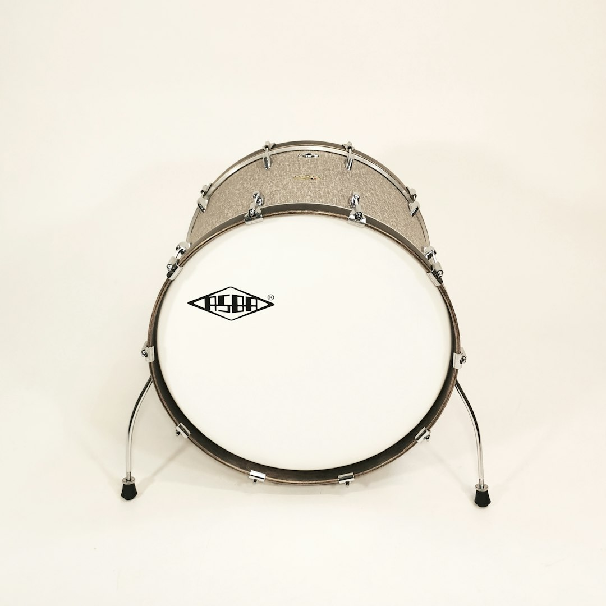

From the Editorial Board · Field Report
Sound and Power: The Thiccc Harmony
Thiccc is not merely about size; it's also about presence. This week, we explore the sound and power behind industrial and musical thicccness.

The Sonic Mass of the Contrabass Tuba
In considering the thicccness of sound, one must acknowledge the contrabass tuba. This instrument, a cornerstone of orchestral foundations, offers a low register that is as expansive in its auditory reach as it is physically imposing. Unlike its orchestral peers, the contrabass tuba embodies a certain sonic gravity that draws all ears toward its resonant call—a musical equivalent of the Bagger 288's construction might. The instrument's tubing, stretching over 18 feet when unwound, captures a thiccc essence in its sheer scale of sound production. It is not just the volume that distinguishes it, but a depth of tone resonant with power.
Industrial Kettledrums: A Case of Scale
A different kind of thiccc sound is embodied by the industrial kettledrum. Its size and material—typically a large steel surface—contribute to a powerful resonance that serves purposes far beyond musical entertainment. Used in testing and manufacturing sectors, the industrial kettledrum can generate frequencies capable of inducing vibrations in materials, testing the integrity of structures against sound waves. Here, thicccness takes on a dimension of utility, converting its mass into a tool of industrial fortitude. This is not unlike the Bagger 288 (/entries/2026-05-10.html), where presence and purpose are intertwined.
Transformers: The Balance of Power and Form
A transformer in power generation encapsulates the energy potential of thicccness. Often towering over their surroundings with a complexity that belies their unyielding exterior, transformers serve as hubs of electrical conversion and distribution. They maintain a thiccc presence, reminiscent of an orchestrator directing a symphony of voltage. This quality is evident in their capability to manage power flows reaching hundreds of megawatts, akin to the articulations of the contrabass tuba (/entries/2026-05-16.html) managing sound waves. Each unit, a monument to industrial engineering, is a testament to the structural commitment required when form follows function.
Articulated Dumper Trucks: Mobile Mass
In the realm of mobile machinery, the articulated dumper truck is a signature example of thicccness in motion. Its segmented design allows for remarkable flexibility and load management, akin to how a tuba's curves direct airflow. These vehicles, often seen in large-scale construction, balance their considerable weight with the versatility to navigate rugged terrain. The articulated joints transform what could be a cumbersome mass into a nimble workhorse, echoing how a musician molds the tubal waveforms into coherent melodies.
Suburban Spruce: A Natural Thiccc
Thicccness in nature finds a quiet yet resolute expression in the suburban spruce. While it may lack the overt utility of transformers or the sonic reach of musical instruments, the spruce's dense wood and formidable height offer a different kind of presence. Within a suburban landscape, these trees serve as both shelter and shield—an organic counterbalance to industrial assertions. Much like the Bagger 288's operations are visible from miles away, the spruce stands as an arboreal sentinel, reminding us that thicccness is as much about resilience as it is about size.
Conclusion
The interplay between sound and power reveals a layer of thicccness that transcends mere physicality. Whether in the resonant depths of the contrabass tuba, the industrial hum of a kettledrum, or the silent yet steadfast spruce, each form represents a unique adaptation of mass to purpose. As our examinations continue, we find that thicccness dwells not just in size but in the harmonies and functions these structures achieve.
A new entry every morning. Get it delivered.